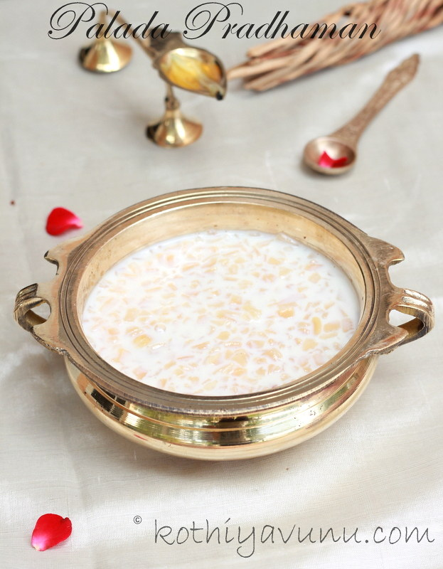

Let's make Payasam

Description
Payasam is one of the most delicious desert. We are gonna make the palada payasam. So let's get started!
Ingredients
- Milk
- Sugar
- Ada (Rice flakes)
Steps
- Rinse half cup ada in water first.
- Boil 2 cups of water. Then remove from flame.
- Add rinsed ada to it and set aside for 15 minutes.
- Transfer to a strainer. Rinse it with Water to avoid further cooking.
- Add 1 litre of milk to a pot.
- Let it come to a boil. Mix it well and let it simmer for 5 minutes.
- Add half cup of sugar.
- Mix it well.
- Let it boil in low medium flame.
- Let it reduce to almost half. It will take at least 45 minutes.
- Add ada.
- Mix it well.
- Simmer until it become thick.
- And paysam ready!
Go to homepage